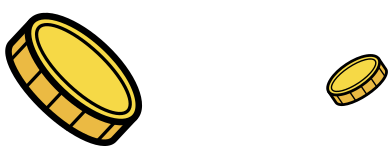

We Validate the Blockchains
Stake and Stack is a non-custodial, secure staking service, operating PoS blockchain validators since 2019. Secure top blockchain networks and earn rewards with a leading validator in the space. We run validators for protocols that align with our values, promoting the future of Web 3. Our nodes ensure stable, around-the-clock operation, allowing you to confidently stake and stack your coins.
